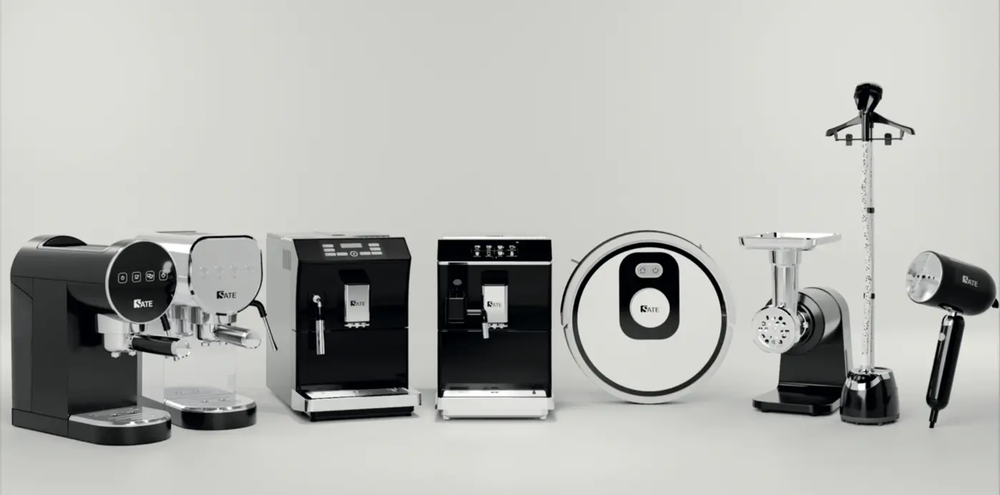

Кейс: Как мы создали свой бренд бытовой техники и сделали в первые 5 месяцев 40 млн рублей выручки на OZON и WB
Миссия бренда - вывести на рынок товары с уникальным внешним видом, качеством и удобством, при этом по доступной цене.
Основные конкуренты: Polaris, BORK, Redmond, Kitfort, Scarlett
Анализ товарной матрицы
Статистику собирали через сервис аналитики маркетплейсов.
Общую категорию взяли «Бытовая техника», смотрели самые топовые позиции по обороту, количество продавцов с продажами и искали товары со стабильным или растущим трендом.
Далее уже шли на Китайские платформы и искали эти товары с достойным внешним видом и которых еще нет на российском рынке.
Через специальный алгоритм проверок выявляем «первые руки». На китайском рынке очень много ресселеров, но нас интересовали только прямые заводы, чтобы заключить с ними «эксклюзив». Тогда этот завод не сможет продавать именно нашу модель другим компаниям на территории России. Через месяц проверок и переговоров мы запускаем производство первой продукции под своим брендом.
Дизайн и внешний вид товаров
Я с самого начала хотел иметь продукт "выше среднего" или даже премиум класса. Моим эталоном был BORK. Поэтому сразу были выбраны 3 основных цвета - белый, черный и серебристый.

Над внешним видом подарочной коробки мы тоже работали около месяца и пришли к единому стилю, который сейчас соблюдается на всей продукции. Меняются только рендеры товаров и информация на коробке.
Через 10-15 дней после оплаты, завод показывает первый сделанный образец товара в живую, мы согласовываем все правки и продолжаем производство всей партии 500-1000 штук.
Логистика в РФ и таможня
Все наши товары строго ввозятся в "белую", поэтому мы оплачиваем пошлину около 6%, еще около 10-15% от стоимости партии уходит на логистику и оплата 20% НДС. Параллельно, пока идет производство на заводах, мы сертифицируем наши образцы(100-150 тыс. за одну модель). Ввоз в "белую" позволяет нам торговать в крупных сетях, таких как Технопарк, Ситилинк и DNS, но об этом чуть позже. И в перспективе, когда бренд выйдет на крупные обороты, вам 100% прилетит жалоба от конкурентов, если товар ввезен в "серую".
Получаем ответ от Китайцев, что все товары готовы к отправке и просчитываем логистику. Этим занимаются специально обученные логисты и брокеры в нашей команде. Я этот процесс полностью делегировал.
Логистика всей партии "в белую" занимает около 30 дней, образцы сейчас мы привозим за 5-7 дней.
Приемка на складе в РФ, маркировка и доупаковка.
Все товары едут на наш собственный склад, где его пересчитывают, проверяют на внешний брак и дополняют. Дополняют? Да, перед самым запуском продаж, я дополнил продукт бумажным конвертов СофтТач, в котором лежит:
Гарантийный талон - на все наши товары мы даем гарантию 12 месяцев
Купон на следующую покупку - около 3% покупателей его используют, что повышает наш общий оборот.
Памятка с историей бренда и просьбой оставить отзыв - очень сильно помогает получать отзывы от клиентов. А на OZON и WB без них - никак.
Склад маркируют товар по правилам OZON и WB и на этом заканчивают приемку. Чуть позже у нас возникла проблема. Китайцы практически всегда упаковывают 2-4 товара в единую транспортированную коробку. Это нужно для защиты подарочной коробки от повреждений. Проблема заключалась в том, что после покупки товара на OZON, покупателям начали приходить рванные и грязные подарочные коробки, поэтому было принято решение сразу обсуждать с заводами производство 1 к 1. То есть в 1 транспортированную коробку кладут 1 подарочную коробку и не больше. Таким образом, мы упростили себе отгрузку на маркетплейсы и теперь клиентам приходит все целое и чистенькое.
Запуск продаж на OZON
Первым делом мы зарегистрировали новый магазин и сразу подали документы на верификацию бренда.
Это нужно для контроля в будущем других продавцом на Озон, которые будут торговать нашими товарами. У нас открывается доступ к "Кабинету бренда". Многие даже не знают что он существует, но это действительно нужная вещь для брендов. Можно видеть кто и по каким ценам продает ваши товары, отправлять жалобы и контролировать демпинг. Отвечать на отзывы у товаров других магазинов.
Кабинет готов к продажам под своим брендом, пора создавать карточки товаров и правильно их заполнять. Инфографику делали в стиле подарочных коробок. Только черно-белый стиль и ничего лишнего. На фото постарались описать преимущества товара, его пользу и почему он нужен нашему клиенту.
Огромную роль на выдаче в поиске OZON играет SEO. Это присутствие ключевых слов в описании товара. Ключевые слова мы собираем через специальные сервисы, описание нам придумывает искусственный интелект, после этого его уже проверяет настоящий человек и вносит небольшие правки.
Запуск рекламы
Товары найдены и завезены, карточки созданы и готовы. Вот он момент, которого мы ждали 6 месяцев. Пора переходить к продажам. За 2 года продаж на OZON я нашел оптимальный алгоритм успешного вывода товаров на площадку. Используя этот алгоритм, товар на 99% через 2 недели начинает успешно продаваться.
Алгоритм полностью раскрывать не буду, его мы и в данный момент применяем на наших клиентах, которые обращаются к нам за ведением их магазинов. Поэтому если вы хотите с нашей помощью выйти на OZON - пишите в TG: danyasm.
Основная суть заключается в параллельном использовании внутренней рекламы, внешней и самовыкупов. Важно все это делать одновременно и правильно.
В работе мы используем автоматизированный сервис по контролю ставок для трафаретов и поиска. Его суть заключается в мониторинге аукциона маркетплейса. Если ставка понизилась, то сервис автоматически снизит и нашу ставку, таким образом мы экономим время и деньги. Ведь аукцион меняется практически каждый час. Еще одна фишка этого сервиса, что мы можем задать ставку для 1 позиции в поиске и он будет его постоянно удерживать. Если конкуренты захотят нас перегнать и выставить ставку выше, то сервис это увидит и моментально поднимет нашу ставку.
Статистика по OZON
За 5 месяцев на 10 позициях мы сделали 29 млн. выручки в основном магазине бренда и 5.3 млн. в дополнительном магазине
Прошу учесть, что сейчас в нашей категории несезон, он начнется осенью и тогда мы сможем увеличить оборот примерно в 2-3 раза.
Запуск продаж на WB
Важная особенность собственных брендов - это присутствие на всех площадках. Поэтому мы решили зайти и на WB, но продаж он генерирует значительно меньше. Нас это не расстраивает, связано это с тем, что цены на WB значительно выше озоновских(из-за большой скидки от платформы). OZON от себя выдает скидку покупателям на наши товары около 20-25%. Поэтому покупатели находят товар на WB, но покупают его на OZON.
За 4 месяца работы WB принес нам 4,5 млн выручки. Стоит учесть то, что не все наши товары представлены на WB и некоторые мы загрузили совсем недавно.
Собственный интернет-магазин
Любой достойный бренд должен иметь свой собственный сайт интернет-магазин. Сразу скажу, что создавали мы его не для продаж, а для увеличения лояльности к бренду. Продавать самостоятельно и заниматься логистикой - не так эффективно, как на маркетплейсах. Поэтому мы решили завысить цены на сайте, чтобы заказов было минимально. Но по статистике посещаемость сайта с каждым днем только увеличивается, а также сайт нужен для "спокойствия" клиентов, которые уже сделали покупку. На сайте они могут найти информации о гарантии и как по ней обратиться, если у них вдруг что-то сломалось.
Через долгие переговоры нам удалось выйти в Технопарк и это огромное достижение для бренда, которому несколько месяцев. Сейчас мы стоим на одной полке с гигантами Polaris, Bork, Redmond и другие.
Так же мы представлены в интернет-магазинах Эльдорадо и Мвидео
Все это благодаря продуктивному общению с менеджерами и качественному товару, которого очень сейчас не хватает на полках оффлайн магазинов после ухода из России крупных брендов.
Вывод
Бренд SATE надежно укрепляется на рынке бытовой техники в России, благодаря правильному анализу от агентства Pride-UP. Мы быстро и эффективно подобрали товары, которые 100% будут продаваться на маркетплейсах, нашли проверенные фабрики в Китае, придумали уникальный дизайн, который выделяется на полке от конкурентов. Но самое главное, что за счет выстроенной годами системы выхода на маркетплейсы мы принесли компании 40 млн. выручки на новых товарах и новом бренде.
Теперь бренд SATE узнает все больше и больше человек, а лояльность к нему только растет. Мы продолжаем работу по проекту и в данный момент завозятся новые товары, улучшаются уже завезенные и повышаем продажи на маркетплейсах за счет внедрения новых инструментов.
А теперь у вас есть 2 пути, закрыть эту статью или записаться ко мне на бесплатную диагностику, где я вам передам весь свой опыт. Если вы хотите уверенно и без проблем зайти на OZON или WB - Первым 20 написавшим - бесплатная часовая диагностика, на которой мы определим как ваш товар успешно продавать на OZON и WB. А если товара нет, то я подскажу какие позиции можно сейчас успешно запустить и как их найти и закупить в Китае по самым низким ценам.